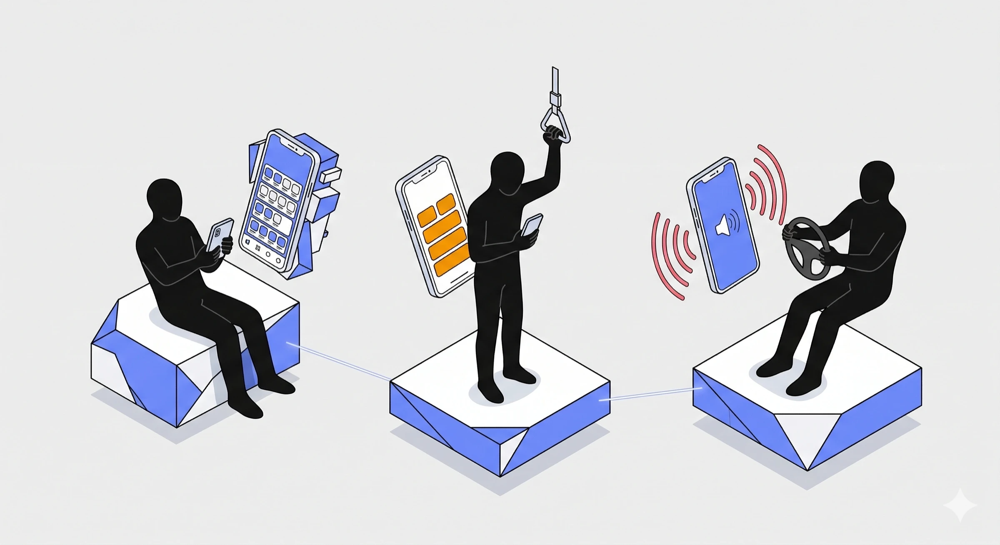
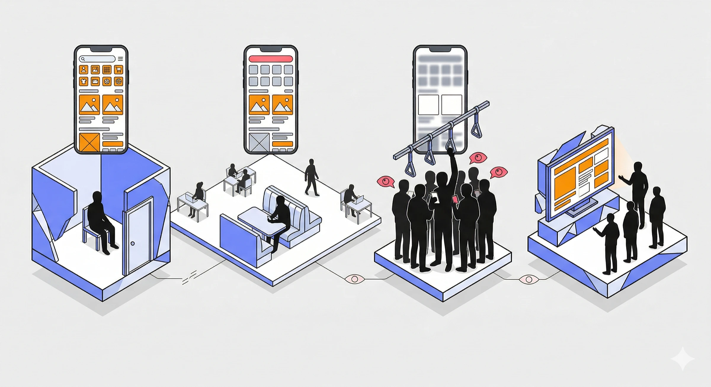
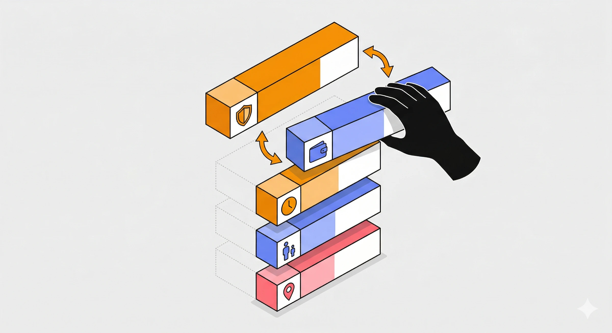
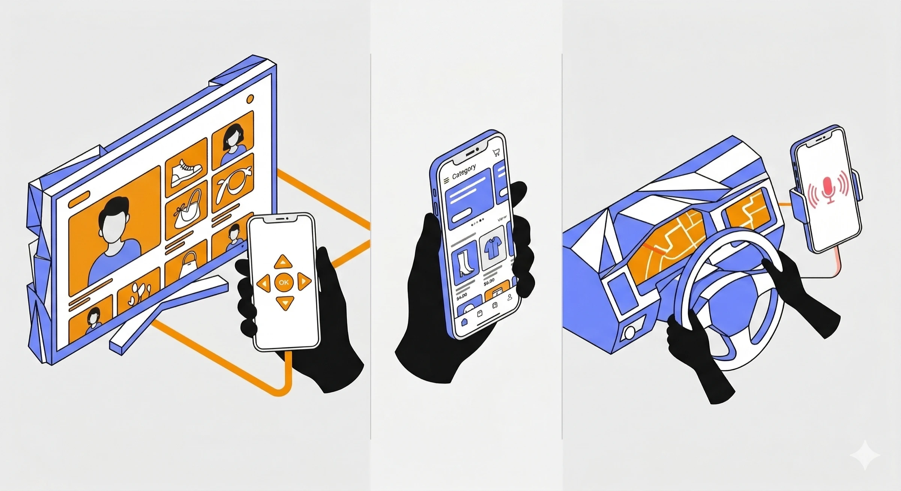
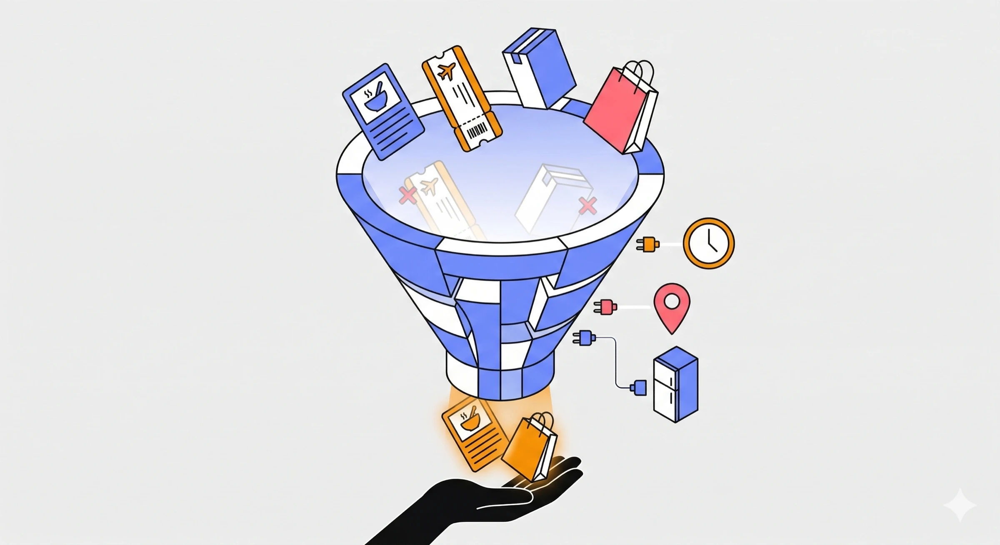
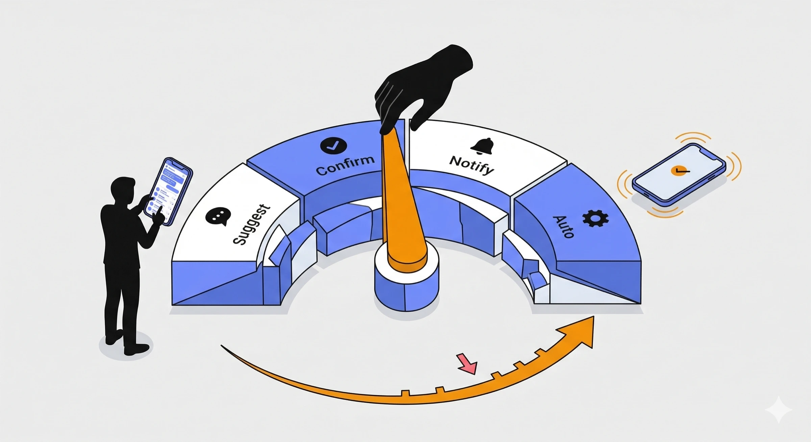
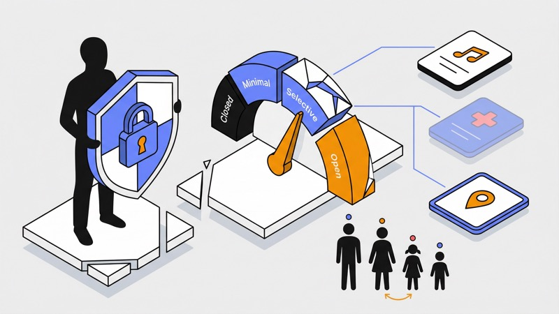
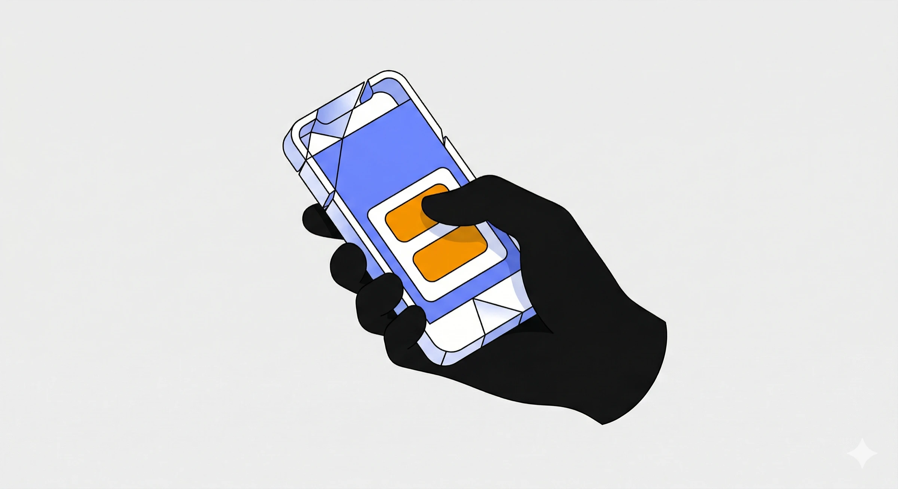
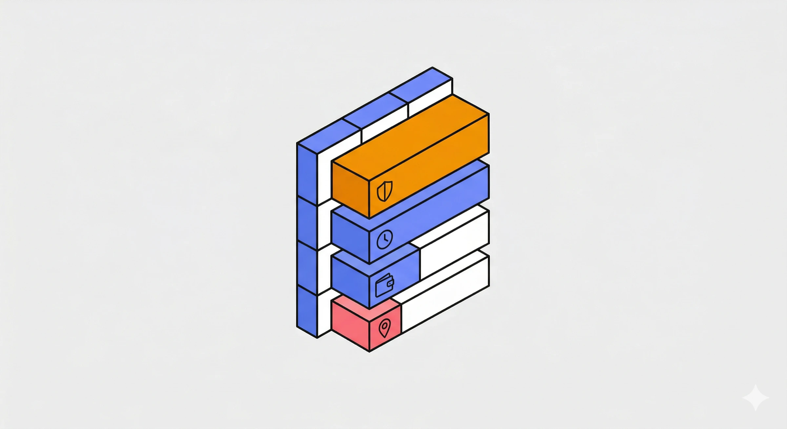

AIが文脈を理解すれば、
すべてが変わる。
Intent（意図）
+
8 Context Tokens
+
Brain
=
状況に適応する体験

BEFORE — 実行の連鎖

AFTER — 文脈 + 判断
「今のあなた」を8つの次元で構造化する。

01
Physical State
手は使えますか？

02
Cognitive Load
頭に余裕がありますか？

03
Social Exposure
誰がそばにいますか？

04
Priority Weight
今最も重要なことは？

05
Form Factor
どんな画面が周りに？

06
Feasibility
今実際に手に入るものは？

07
Autonomy Dial
AIにどれだけ任せますか？

08
Disclosure Dial
AIにどこまで知らせますか？
①-⑥ 状況を読む Token
⑦ 関係を制御する Dial
⑧ 関係を制御する Dial
頭にどれくらい余裕がありますか？
会議が6つ続いた後に、夕食の選択肢を20個も比べられるわけがありません。直接測定ではなく、時間帯 × カレンダー密度 × 直近のアクティビティパターンから推定。
focusedbaselinedivideddepletedanxiouspanic
P1: Living Home での応用
仕事帰り、疲弊。夕食の選択肢が12→2に。短いラベル、説明なし。ワンタップの決断のみ。
The Family Trip
— 「雨だ」で10秒リプラン。
Feasibility
天気が変わった瞬間、営業中の屋内スポットだけで旅程を自動再構築。

Physical State
子どもが発熱→最寄りの英語対応クリニックを表示。他の予定は自動延期。

Priority Weight
体験 > 予算。雨でも子どもが楽しめる竹細工ワークショップを優先提案。
Result
旅が終われば消える使い捨てUI。帰宅翌朝、2週間が3分の動画に。学習はHome Brainに還元。